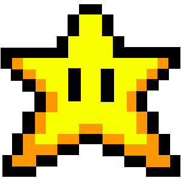

COMPUTACIÓN BÁSICA
Aquí empiezas desde cero. No necesitas saber nada: te lo explicamos con ejemplos de todos los días.
💛 Sin prisa y sin castigos. Si te trabas, haz clic en el personaje de abajo a la derecha y te da una pista.

PIXELWORD Inicio Juegos Ranking Perfil Invitado SALIRAquí empiezas desde cero. No necesitas saber nada: te lo explicamos con ejemplos de todos los días.